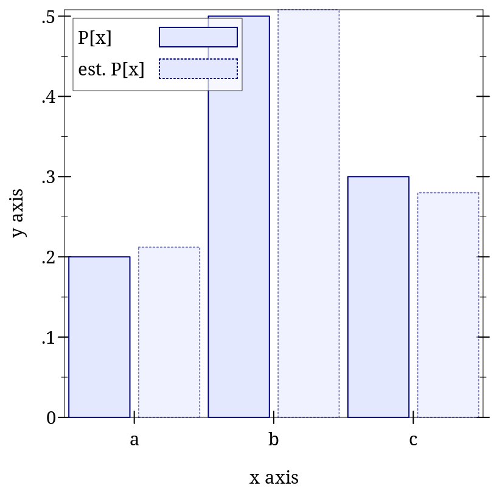

9.3 Finite Distribution Families
9.3.1 Unordered Discrete Distributions
语法
(Discrete-Dist A)
函数
(discrete-dist xs) → (Discrete-Dist A)
xs : (Sequenceof A) (discrete-dist xs ws) → (Discrete-Dist A) xs : (Sequenceof A) ws : (Sequenceof Real)
函数
(discrete-dist-values d) → (Listof A)
d : (Discrete-Dist A)
函数
(discrete-dist-probs d) → (Listof Positive-Flonum)
d : (Discrete-Dist A)
The weights in ws must be nonnegative, and are treated as unnormalized probabilities. When ws is not given, the values in xs are assigned uniform probabilities.
The type (Discrete-Dist A) is a subtype of (dist A A). This means that discrete distribution objects are unordered, and thus have only a pdf and a procedure to generate random samples.
Note, however, that the discrete-dist-values and discrete-dist-probs functions produce lists that may be paired; that is, if the result of calling discrete-dist-values on a given distribution produces a list whose third element is 'a, and the result of calling discrete-dist-probs on the same distribution produces a list whose third element is 0.25, then the given distribution associates the probability 0.25 with the value 'a.
> (define xs '(a b c)) > (define d (discrete-dist xs '(2 5 3))) > (define n 500) > (define h (samples->hash (sample d n)))
> (plot (list (discrete-histogram (map vector xs (map (distribution-pdf d) xs)) #:x-min 0 #:skip 2 #:label "P[x]") (discrete-histogram (map vector xs (map (λ (x) (/ (hash-ref h x) n)) xs)) #:x-min 1 #:skip 2 #:line-style 'dot #:alpha 0.5 #:label "est. P[x]"))) 